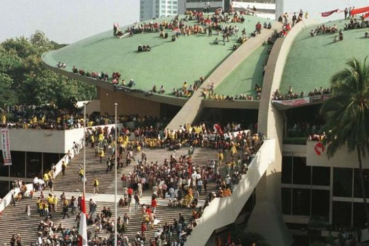
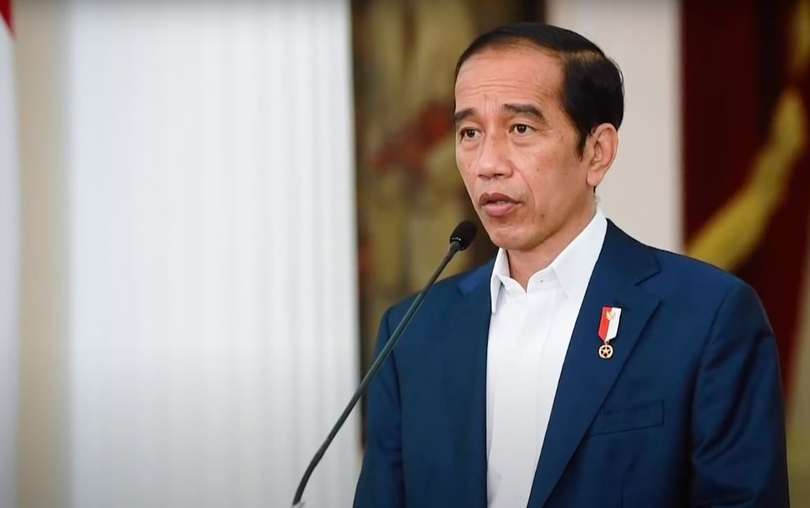
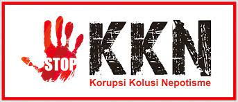

Demokrasi Pancasila masa reformasi (1998-sekarang)

Karakteristik Demokrasi Periode Reformasi


Era ini dimulai dengan mundurnya kuasa Soeharto setelah 32 tahun. Beralihnya pemerintahan ke BJ Habibie Presiden ke-3 Republik Indonesia dilihat sebagai arah baru untuk demokrasi Indonesia. Pada masa orde baru, pemerintahan berusaha untuk membangun negara yang lebih demokratis dan adil. Sedangkan pada masa reformasi, Pancasila menjadi panduan moral dan ideologis dalam pembentukkan negara, dan menjadi inti utama dari demokrasi yang digunakan negara.
Pada periode reformasi ada beberapa karakteristik yang berbeda dengan pada masa orde baru. Berikut merupakan karakteristik demokrasi pada periode reformasi:
-Pemilu lebih demokratis
-Rotasi kekuasaan dari pemerintah pusat hingga daerah
-Pola rekrutmen politik terbuka
-Hak-hak dasar warga negara terjamin
Ada juga beberapa hal yang menjadi prioritas negara pada masa ini, yaitu:
a. Demokrasi dan hak asasi manusia
Pada masa ini, demokrasi yang berlandaskan pada musyawarah untuk mencapai mufakat menjadi prioritas negara. Maka, pada masa reformasi Indonesia melaksanakan pemilihan umum yang bebas dan adil. Selain itu, hak asasi manusia diberikan perlindungan yang lebih kuat, termasuk kebebasan berpendapat dan berorganisasi.
b. Keadilan sosial
Pemerintah berkomitmen untuk mengurangi kesenjangan sosial dan ekonomi antara berbagai lapisan masyarakat. Program-program bantuan sosial diperluas untuk membantu mereka.
c. Keragaman budaya dan agama
Pada masa ini, Indonesia berusaha memelihara sifat keharmonisan antar agama dan antar suku. Dimana, semua orang dapat memeluk antara enam agama resmi di Indonesia tanpa paksaan dan dengan kebebasan memilih.
d. Ketahanan nasional
Pada masa ini, Indonesia menekankan pentingnya kedaulatan dan ketahan nasional bagi seluruh rakyatnya. Walaupun dalam era globalisasi, Indonesia tetap berkomitmen untuk menjaga kedaulatan dan melindungi kepentingan nasional negara.
e. Kepemimpinan yang baik
Masa reformasi menciptakan budaya politik yang lebih terbuka, dengan fokus pada transparansi, akuntabilitas, dan penanggulangan korupsi.
f. Pendidikan dan pembangunan manusia
Pada masa reformasi, Pancasila menekankan pentingnya pendidikan dan pembangunan manusia. Selama masa ini, ada peningkatan dalam investasi pendidikan, dan pengembangan sumber daya manusia menjadi prioritas.
g. Hubungan internasional
Hubungan internasional juga menjadi hal yang penting pada masa ini. Negara Indonesia terus mempromosikan prinsip luar biasa dan nonblok dalam diplomasi internasionalnya.
Masalah pada masa reformasi:
Walaupun masa ini digunakan untuk memperbaiki kesalahan pada masa sebelumnya, tetap saja masa ini ada beberapa faktor yang tidak mendukung. Pada masa orde baru korupsi, kolusi, dan otokrasi merajalela di segala bidang. Ini merupakan salah satu faktor pendorong lahirnya masa reformasi. Masa reformasi ini muncul pada puncaknya kekecewaan dan ketidakpuasan masyarakat Indonesia. Maka, nilai-nilai Pancasila tidak dapat dilaksanakan dengan sepenuhnya. Masa reformasi aslinya tidak terlalu jauh dengan masa orde baru. Dimana masih ada banyak tantangan, seperti adanya korupsi, kolusi, dan nepotisme (KKN) yang masih terus terjadi di Indonesia.
Hal ini disebabkan karena beberapa faktor seperti, mulai melemahnya rasa persatuan dan kesatuan di Indonesia, pemerintah yang kurang konsisten dengan penerapan hukum, dan lain-lain lagi. Ini menjadi masalah besar, karena pada akhirnya yang akan kena rugi bukan pelakunya tetapi warga negaranya sendiri. Korupsi dan kolusi merupakan masalah yang sangat jelas di negara ini, tetapi nepotisme masih saja ada bagusnya jika digunakan dengan benar. Walaupun itu, banyak orang menggunakan kuasa kenalan atau yang mereka sudah punya dan menyalah gunakannya dan pada akhirnya merugikan warga negaranya sendiri.